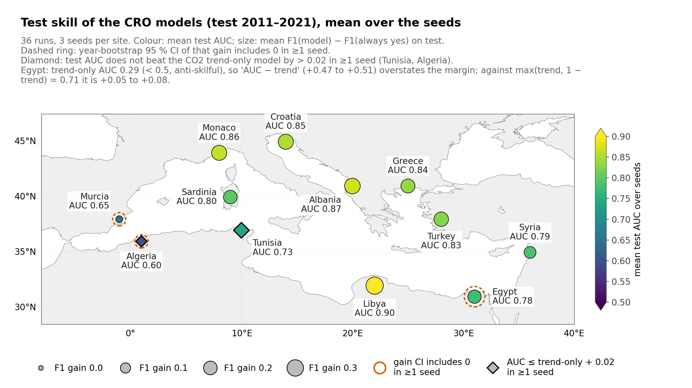
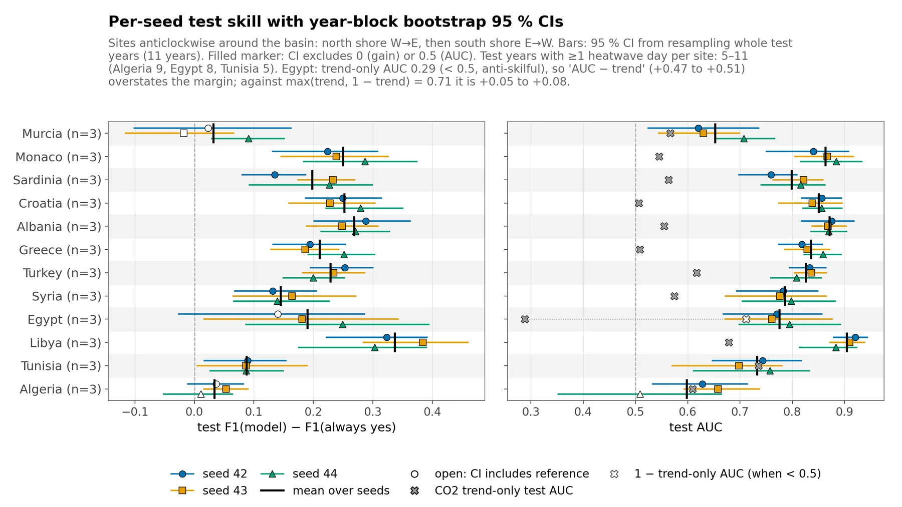
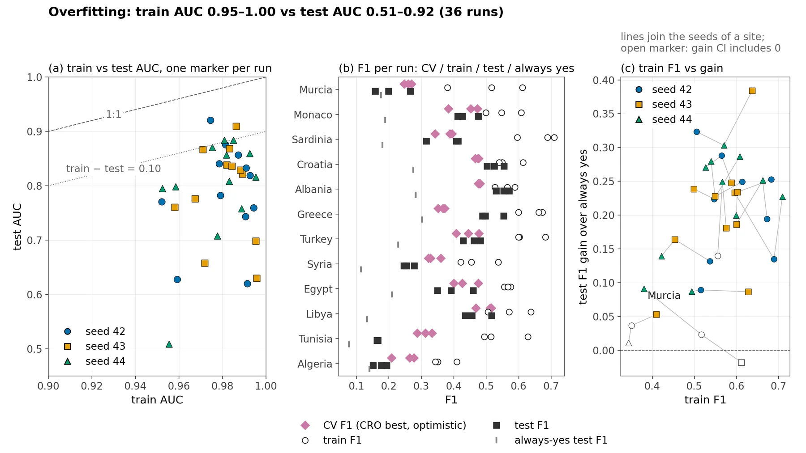

Skill and overfitting
How well heatwave days are predicted in the test years (2011–2021).
Skill tables
Skill by site (mean of 3 seeds, test 2011–2021)
| Site | Test AUC mean (min–max) | Test F1 | Always-yes F1 | F1 gain | Seeds with gain CI > 0 | Train AUC | CV F1 |
|---|---|---|---|---|---|---|---|
| Libya | 0.90 (0.88–0.92) | 0.47 | 0.13 | 0.34 | 3/3 | 0.98 | 0.50 |
| Albania | 0.87 (0.87–0.88) | 0.55 | 0.28 | 0.27 | 3/3 | 0.98 | 0.48 |
| Monaco | 0.86 (0.84–0.88) | 0.44 | 0.19 | 0.25 | 3/3 | 0.98 | 0.44 |
| Croatia | 0.85 (0.84–0.86) | 0.53 | 0.28 | 0.25 | 3/3 | 0.98 | 0.47 |
| Greece | 0.84 (0.82–0.86) | 0.51 | 0.30 | 0.21 | 3/3 | 0.99 | 0.36 |
| Turkey | 0.83 (0.81–0.84) | 0.46 | 0.23 | 0.23 | 3/3 | 0.99 | 0.44 |
| Sardinia | 0.80 (0.76–0.82) | 0.38 | 0.18 | 0.20 | 3/3 | 0.99 | 0.37 |
| Syria | 0.79 (0.78–0.80) | 0.26 | 0.11 | 0.15 | 3/3 | 0.97 | 0.34 |
| Egypt | 0.78 (0.76–0.80) | 0.40 | 0.21 | 0.19 | 2/3 | 0.95 | 0.43 |
| Tunisia | 0.73 (0.70–0.76) | 0.16 | 0.08 | 0.09 | 3/3 | 0.99 | 0.31 |
| Murcia | 0.65 (0.62–0.71) | 0.21 | 0.18 | 0.03 | 1/3 | 0.99 | 0.26 |
| Algeria | 0.60 (0.51–0.66) | 0.17 | 0.14 | 0.03 | 1/3 | 0.96 | 0.25 |
About this table
F1 gain = test F1 minus the F1 of always predicting a heatwave day; its CI is a year-block bootstrap over the 11 test years. Train AUC is 0.95–0.99 (site means): the models overfit, so only test scores measure skill.
general/resultados/skill_by_site.csv · download
Skill by run (12 sites × seeds 42, 43, 44)
| Site | Seed | Test AUC (95% CI) | Test F1 | F1 gain (95% CI) | CV F1 | Train F1 | Train AUC | Drivers | Columns |
|---|---|---|---|---|---|---|---|---|---|
| Murcia | 42 | 0.62 (0.52–0.74) | 0.20 | 0.02 (-0.10–0.16) | 0.27 | 0.52 | 0.99 | 37 | 523 |
| Murcia | 43 | 0.63 (0.54–0.70) | 0.16 | -0.02 (-0.12–0.07) | 0.25 | 0.61 | 1.00 | 47 | 592 |
| Murcia | 44 | 0.71 (0.65–0.77) | 0.27 | 0.09 (0.03–0.15) | 0.26 | 0.38 | 0.98 | 30 | 407 |
| Monaco | 42 | 0.84 (0.75–0.91) | 0.41 | 0.22 (0.13–0.31) | 0.47 | 0.55 | 0.98 | 30 | 365 |
| Monaco | 43 | 0.87 (0.80–0.92) | 0.43 | 0.24 (0.15–0.33) | 0.38 | 0.50 | 0.97 | 31 | 321 |
| Monaco | 44 | 0.88 (0.82–0.93) | 0.48 | 0.29 (0.18–0.37) | 0.45 | 0.61 | 0.98 | 31 | 384 |
| Sardinia | 42 | 0.76 (0.70–0.81) | 0.32 | 0.13 (0.08–0.19) | 0.34 | 0.69 | 0.99 | 38 | 483 |
| Sardinia | 43 | 0.82 (0.76–0.86) | 0.41 | 0.23 (0.17–0.27) | 0.39 | 0.60 | 0.99 | 27 | 356 |
| Sardinia | 44 | 0.82 (0.74–0.86) | 0.41 | 0.23 (0.09–0.30) | 0.39 | 0.71 | 1.00 | 31 | 401 |
| Croatia | 42 | 0.86 (0.82–0.89) | 0.52 | 0.25 (0.19–0.31) | 0.48 | 0.61 | 0.99 | 26 | 303 |
| Croatia | 43 | 0.84 (0.77–0.90) | 0.50 | 0.23 (0.16–0.30) | 0.47 | 0.55 | 0.98 | 27 | 292 |
| Croatia | 44 | 0.86 (0.82–0.90) | 0.55 | 0.28 (0.22–0.35) | 0.47 | 0.54 | 0.98 | 24 | 287 |
| Albania | 42 | 0.88 (0.82–0.92) | 0.57 | 0.29 (0.20–0.36) | 0.48 | 0.56 | 0.98 | 26 | 344 |
| Albania | 43 | 0.87 (0.84–0.90) | 0.53 | 0.25 (0.19–0.31) | 0.48 | 0.59 | 0.98 | 30 | 311 |
| Albania | 44 | 0.87 (0.84–0.90) | 0.55 | 0.27 (0.21–0.33) | 0.48 | 0.53 | 0.98 | 21 | 297 |
| Greece | 42 | 0.82 (0.77–0.86) | 0.50 | 0.19 (0.13–0.25) | 0.37 | 0.67 | 0.99 | 32 | 416 |
| Greece | 43 | 0.83 (0.79–0.87) | 0.49 | 0.19 (0.13–0.24) | 0.35 | 0.60 | 0.99 | 36 | 364 |
| Greece | 44 | 0.86 (0.82–0.89) | 0.55 | 0.25 (0.19–0.30) | 0.37 | 0.66 | 0.99 | 27 | 404 |
| Turkey | 42 | 0.83 (0.79–0.86) | 0.48 | 0.25 (0.20–0.30) | 0.48 | 0.68 | 0.99 | 42 | 543 |
| Turkey | 43 | 0.84 (0.80–0.87) | 0.46 | 0.23 (0.18–0.29) | 0.41 | 0.60 | 0.98 | 35 | 487 |
| Turkey | 44 | 0.81 (0.76–0.86) | 0.43 | 0.20 (0.15–0.25) | 0.44 | 0.60 | 0.98 | 33 | 430 |
| Syria | 42 | 0.78 (0.69–0.85) | 0.25 | 0.13 (0.07–0.20) | 0.33 | 0.54 | 0.98 | 42 | 473 |
| Syria | 43 | 0.78 (0.67–0.86) | 0.28 | 0.16 (0.07–0.27) | 0.36 | 0.45 | 0.97 | 25 | 321 |
| Syria | 44 | 0.80 (0.70–0.88) | 0.25 | 0.14 (0.07–0.23) | 0.32 | 0.42 | 0.96 | 24 | 316 |
| Egypt | 42 | 0.77 (0.67–0.86) | 0.35 | 0.14 (-0.03–0.29) | 0.40 | 0.56 | 0.95 | 26 | 330 |
| Egypt | 43 | 0.76 (0.67–0.88) | 0.39 | 0.18 (0.02–0.34) | 0.48 | 0.58 | 0.96 | 32 | 355 |
| Egypt | 44 | 0.80 (0.70–0.89) | 0.46 | 0.25 (0.09–0.39) | 0.43 | 0.57 | 0.95 | 25 | 325 |
| Libya | 42 | 0.92 (0.88–0.94) | 0.46 | 0.32 (0.22–0.39) | 0.52 | 0.51 | 0.97 | 19 | 232 |
| Libya | 43 | 0.91 (0.87–0.94) | 0.52 | 0.38 (0.28–0.46) | 0.51 | 0.64 | 0.99 | 33 | 376 |
| Libya | 44 | 0.88 (0.81–0.92) | 0.44 | 0.30 (0.18–0.39) | 0.47 | 0.57 | 0.98 | 25 | 342 |
| Tunisia | 42 | 0.74 (0.65–0.82) | 0.17 | 0.09 (0.02–0.15) | 0.31 | 0.51 | 0.99 | 27 | 307 |
| Tunisia | 43 | 0.70 (0.57–0.78) | 0.16 | 0.09 (0.00–0.19) | 0.33 | 0.63 | 1.00 | 28 | 380 |
| Tunisia | 44 | 0.76 (0.61–0.83) | 0.16 | 0.09 (0.03–0.15) | 0.29 | 0.49 | 0.99 | 26 | 255 |
| Algeria | 42 | 0.63 (0.53–0.71) | 0.18 | 0.04 (-0.01–0.08) | 0.26 | 0.35 | 0.96 | 37 | 390 |
| Algeria | 43 | 0.66 (0.59–0.74) | 0.19 | 0.05 (0.02–0.09) | 0.28 | 0.41 | 0.97 | 34 | 445 |
| Algeria | 44 | 0.51 (0.35–0.66) | 0.15 | 0.01 (-0.05–0.06) | 0.21 | 0.34 | 0.96 | 35 | 519 |
About this table
One row per CRO run. Drivers = selected drivers; columns = lagged inputs of the logistic regression.
general/resultados/skill_by_run.csv · download
Test skill per site and seed
Mean test AUC and F1 gain per site, test 2011–2021 (3 seeds per site)

About this figure
Each site is coloured by its mean test AUC over the 3 seeds and sized by the mean test F1 gain over an always-yes forecast. A dashed orange ring means the year-bootstrap 95% CI of the F1 gain includes 0 in at least one seed (Murcia, Algeria, Egypt); a diamond means the test AUC does not beat the CO2 trend-only model by more than 0.02 in at least one seed (Tunisia, Algeria). Mean test AUC ranges from 0.60 (Algeria) to 0.90 (Libya).
general/figuras/slides/S01a_skill_map.png
Per-seed test F1 gain and AUC with year-bootstrap 95% CIs, 12 sites

About this figure
Left: test F1 gain over always-yes; right: test AUC; one marker per seed (42 circle, 43 square, 44 triangle) with 95% CIs from resampling whole test years (2011–2021), and a black bar for the mean over seeds. Open markers: the CI includes the reference (0 for the gain, 0.5 for AUC); grey crosses: test AUC of the CO2 trend-only model (white cross for Egypt: 1 − trend-only AUC, because that AUC is below 0.5). 31 of 36 runs have a gain CI excluding 0 and 35 of 36 an AUC CI above 0.5.
general/figuras/slides/S01b_forest_skill.png
Overfitting diagnostics
Overfitting: train vs test AUC and CV/train/test F1 for all 36 runs

About this figure
(a) Train vs test AUC per run (dashed 1:1 line, dotted line where train − test = 0.10); (b) per site, the CRO's cross-validation F1 (pink diamonds), train F1 (open circles), test F1 (black squares) and always-yes test F1 (grey tick); (c) train F1 vs test F1 gain, with lines joining the seeds of a site and open markers where the gain CI includes 0. Train AUC is 0.95–1.00 against 0.51–0.92 on test (median gap 0.16), and across the seeds of a site the train F1 is not related to the test gain.
general/figuras/slides/S01c_overfitting.png